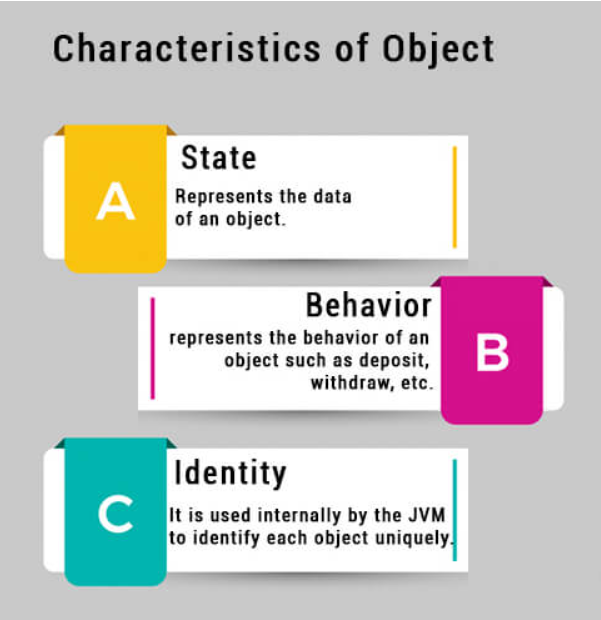

Clases en Java
Las clases es el componente fundamental en la POO. Para entender el concepto de clase, primero necesitamos entender que son los objetos ya que son la clave en la tecnología orientada a objetos.
Objetos
Los objetos de software son una parte fundamental de la programación orientada a objetos. Son muy similares a los objetos que representan cosas del mundo real. Como puede ser un micrófono, altavoz, ordenador, etc. Como ya estudiamos en la unidad 1, los objetos del mundo real tienen tres características, identidad, estado y comportamiento.

❇️ Identidad
La identidad de un objeto normalmente se implementa a través de un ID único. El valor del ID no es visible para el usuario externo. Sin embargo, la JVM lo utiliza internamente para identificar cada objeto de forma única.
❇️ Estado - Campos
Representa el valor de los datos. Por ejemplo, para un ordenador, el estado podría ser la cantidad de memoria RAM que tiene, el sistema operativo que incluye, tamaño del disco duro, etc. En el caso de una persona, el estado puede ser la edad, el nombre, si está casada, etc.
❇️ Comportamiento - Métodos
Atendiendo al comportamiento de un ordenador podría ser arrancando, apagándose, reiniciando, escribir en la pantalla, etc. Para una persona será comer, beber, dormir, etc.
Los objetos de software almacenan su estado en campos. Los campos es lo que conocemos como variables. Y exponen su comportamiento en lo que llamamos métodos.
Importante
Un objeto es una instancia de la clase. Una clase es una plantilla o modelo a partir del cual se crean objetos. Entonces, un objeto es la instancia (resultado) de una clase.
Clases
Teniendo en cuenta todo esto, podemos pasar a hablar de clase.
Una clase es una plantilla para crear objetos.
Para crear un clase en Java utilizamos la palabra reservada _class_.
La nomenclatura del nombre de la clase es primera letra en mayúsculas y usar la regla CamelCase para palabras compuestas.
public class Coche {
}
public: es un modificador de acceso, determina qué acceso queremos permitir a otros en la clase. Existen tres tipos de modificadores de acceso:
- public: en este caso, public especifica que no hay ninguna restricción de acceso.
- private: nadie puede acceder a la clase.
- protected: permite a las clases de este paquete acceder.
- class: identificador de clase.
¿De qué forma nos ayudan las clases en nuestro código? Bien, hasta ahora solo hemos trabajado con tipos de datos primitivos como int, short, char, etc. Este tipo de datos es bastante limitado. Por tanto, las clases se podrían considerar como un tipo de dato extra poderoso definido por el usuario que nos permite realizar acciones en las que los datos primitivos se quedan cortos.
Una clase puede contener:
- Campos
- Métodos
- Constructores
- Bloques de código
- Clases o interfaces anidadas
Miembros de la clase : atributos y métodos
Atributos, campos de la clase o variables de instancia
Hasta ahora hemos creado variables dentro de un método. A éstas se les llama variables locales porque son propias del método en si. Y no puedes acceder a ellas desde fuera de ese método. También vimos esto dentro de bloques de código {}, donde las variables creadas en un bloque más interno no eran accesibles en bloques más externos. Ejemplo:
public static void sumar() {
int contador = 0;
while (contador < 10) {
int suma = 0;
suma += contador;
contador ++;
}
System.out.println(suma); // esto da error, la variable
// suma aquí no existe.
}
A diferencia de esto, las clases nos permiten crear variables que pueden ser accesibles desde cualquier lugar dentro de la clase que estamos creando. A estas variables se les conoce con el nombre de variables miembro/instancia, o de manera más común como campos o atributos de la clase.
Creación de atributos de la clase
Para crear un campo de la clase se debe especificar un modificador de acceso(opcional) + tipo de dato + nombre de la variable + inicialización(opcional).
Si no se pone modificador utiliza el de por defecto en el que la variable es accesible por las clases dentro del mismo paquete.
El modificador de acceso funciona de la misma forma a como lo hemos explicado anteriormente para la creación de una clase.
public class Coche {
private int puertas;
private int ruedas;
private String modelo;
private String color;
}
Estamos definiendo el estado del coche, es decir, sus características.
Modificadores de acceso de atributos
Un buen diseño de software refuerza la encapsulación. Aquí es donde las variables de instancia de un objeto son visibles solo para los propios métodos del objeto. El código fuera del objeto no puede acceder directamente a estas variables. Se utiliza para hacer esto el modificador de visibilidad privada. Como regla general, cuando definimos campos para la clase el modificador de acceso será privado. Es decir, usamos el concepto de encapsulación que es una clave fundamental de la programación orientada a objetos. Lo que hacemos es ocultar los campos de la clase del acceso público para que nadie pueda acceder y modificar los campos de la clase. Significa que la representación del objeto se ocultará a la vista, es decir, el funcionamiento interno del objeto.
Existen los siguientes tipos de modificadores, ordenados de menor a mayor restricción:
- public: son accesibles desde cualquier lugar.
- protected: son accesibles desde dentro del mismo paquete y en clases heredadas.
- private: solo son accesibles desde la propia clase, no son accesibles desde fuera.
Métodos de instancia
Para actualizar los campos de la clase, como su acceso es privado se utilizan los métodos de instancia. Estos métodos ya no van a ser public static como hemos visto hasta ahora. Para crear los métodos que actualizan los campos debemos usar la siguiente nomenclatura:
-
Setters: establecen el valor en el campo de la clase
public void setNombreCampo(TipoDatoCampo nombreCampo), donde el parámetro del método debe ser del mismo tipo ya que vamos a actualizar su valor mediante el método.
-
Getters: devuelven el campo de la clase
public tipoDatoCampo getNombreCampo()
public class Coche {
private int puertas;
private int ruedas;
private String modelo;
private String color;
public void setPuertas(int puertas) {
this.puertas = puertas;
}
public int getPuertas() {
return this.puertas;
}
public void setRuedas() {
this.ruedas = ruedas;
}
public int getRuedas() {
return this.ruedas;
}
public void setModelo(String modelo) {
this.modelo = modelo;
}
public String getModelo() {
return this.modelo;
}
public void setColor(String color) {
this.color = color;
}
public String getColor() {
return this.color;
}
}
Palabra reservada this
En un método set como el nombre del parámetro del método es igual al del campo de la clase, necesitamos algo que nos permita distinguir entre uno u otro. Para esto se utiliza la palabra reservada this que hace alusión al campo de la clase.